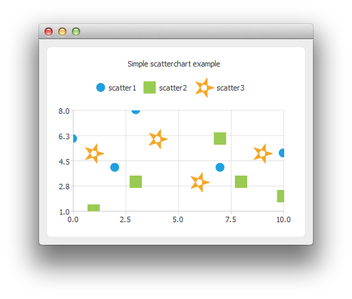

QScatterSeries Class
The QScatterSeries class presents data in scatter charts. More...
| Header: | #include <QScatterSeries> |
| Instantiated By: | ScatterSeries |
| Inherits: | QXYSeries |
Public Types
| enum | MarkerShape { MarkerShapeCircle, MarkerShapeRectangle, MarkerShapeRotatedRectangle, MarkerShapeTriangle, MarkerShapeStar, MarkerShapePentagon } |
Properties
|
|
Public Functions
| QScatterSeries(QObject *parent = nullptr) | |
| virtual | ~QScatterSeries() |
| QColor | borderColor() const |
| QBrush | brush() const |
| QScatterSeries::MarkerShape | markerShape() const |
| qreal | markerSize() const |
| void | setBorderColor(const QColor &color) |
| void | setMarkerShape(QScatterSeries::MarkerShape shape) |
| void | setMarkerSize(qreal size) |
Reimplemented Public Functions
| virtual QColor | color() const override |
| virtual void | setBrush(const QBrush &brush) override |
| virtual void | setColor(const QColor &color) override |
| virtual void | setPen(const QPen &pen) override |
| virtual QAbstractSeries::SeriesType | type() const override |
Signals
| void | borderColorChanged(QColor color) |
| void | colorChanged(QColor color) |
| void | markerShapeChanged(QScatterSeries::MarkerShape shape) |
| void | markerSizeChanged(qreal size) |
Detailed Description
The scatter data is displayed as a collection of points on the chart. For each point, two values are specified that determine its position on the horizontal axis and the vertical axis.

The following code snippet illustrates how to create a basic scatter chart:
QScatterSeries* series = new QScatterSeries(); series->append(0, 6); series->append(2, 4); ... chart->addSeries(series);
For more information, see Charts with Widgets Gallery and Creating Scatter Charts.
Member Type Documentation
enum QScatterSeries::MarkerShape
This enum value describes the shape used when rendering marker items.
| Constant | Value | Description |
|---|---|---|
QScatterSeries::MarkerShapeCircle | 0 | The marker is a circle. This is the default value. |
QScatterSeries::MarkerShapeRectangle | 1 | The marker is a rectangle. |
QScatterSeries::MarkerShapeRotatedRectangle | 2 | The marker is a rotated rectangle. |
QScatterSeries::MarkerShapeTriangle | 3 | The marker is a triangle. |
QScatterSeries::MarkerShapeStar | 4 | The marker is a star. |
QScatterSeries::MarkerShapePentagon | 5 | The marker is a pentagon. |
Property Documentation
borderColor : QColor
This property holds the color used to draw the marker borders.
This is a convenience property for modifying the color of the pen.
Access functions:
| QColor | borderColor() const |
| void | setBorderColor(const QColor &color) |
Notifier signal:
| void | borderColorChanged(QColor color) |
See also QScatterSeries::pen().
brush : QBrush
This property holds the brush used to draw the scatter series markers.
The brush can be an image that can be created using QPainterPath, for example.
Access functions:
| QBrush | brush() const |
| virtual void | setBrush(const QBrush &brush) override |
color : QColor
This property holds the color used to fill the series markers.
This is a convenience property for modifying the color of the brush.
Access functions:
| virtual QColor | color() const override |
| virtual void | setColor(const QColor &color) override |
Notifier signal:
| void | colorChanged(QColor color) |
See also QScatterSeries::brush().
markerShape : MarkerShape
This property holds the shape of the marker used to render the points in the series.
The default shape is MarkerShapeCircle.
Access functions:
| QScatterSeries::MarkerShape | markerShape() const |
| void | setMarkerShape(QScatterSeries::MarkerShape shape) |
Notifier signal:
| void | markerShapeChanged(QScatterSeries::MarkerShape shape) |
See also MarkerShape.
markerSize : qreal
This property holds the size of the marker used to render the points in the series.
Access functions:
| qreal | markerSize() const |
| void | setMarkerSize(qreal size) |
Notifier signal:
| void | markerSizeChanged(qreal size) |
See also QXYSeries::setMarkerSize.
Member Function Documentation
[explicit] QScatterSeries::QScatterSeries(QObject *parent = nullptr)
Constructs a series object that is a child of parent.
[virtual noexcept] QScatterSeries::~QScatterSeries()
Deletes the scatter series.
Note: Adding the series to QChart transfers the ownership to the chart.
[signal] void QScatterSeries::borderColorChanged(QColor color)
This signal is emitted when the line (pen) color changes to color.
Note: Notifier signal for property borderColor.
[signal] void QScatterSeries::colorChanged(QColor color)
This signal is emitted when the fill (brush) color changes to color.
Note: Notifier signal for property color.
[signal] void QScatterSeries::markerShapeChanged(QScatterSeries::MarkerShape shape)
This signal is emitted when the marker shape changes to shape.
Note: Notifier signal for property markerShape.
[signal] void QScatterSeries::markerSizeChanged(qreal size)
This signal is emitted when the marker size changes to size.
Note: Notifier signal for property markerSize.
[override virtual] void QScatterSeries::setBrush(const QBrush &brush)
Reimplements: QXYSeries::setBrush(const QBrush &brush).
See also brush().
[override virtual] void QScatterSeries::setPen(const QPen &pen)
Reimplements: QXYSeries::setPen(const QPen &pen).
[override virtual] QAbstractSeries::SeriesType QScatterSeries::type() const
Reimplements an access function for property: QAbstractSeries::type.